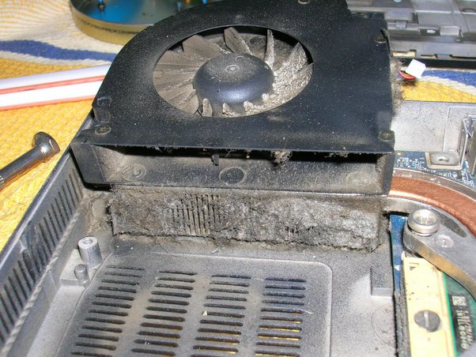
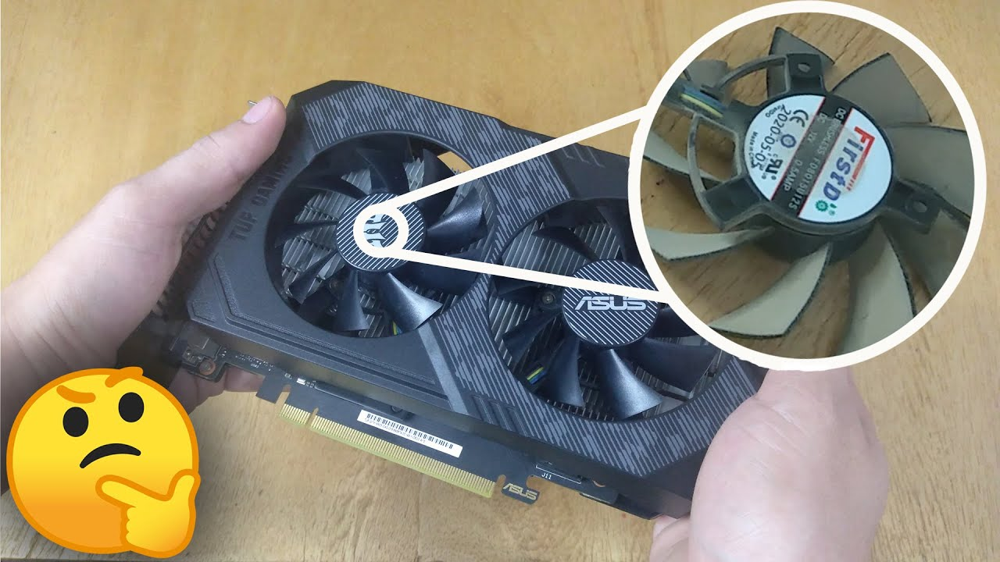
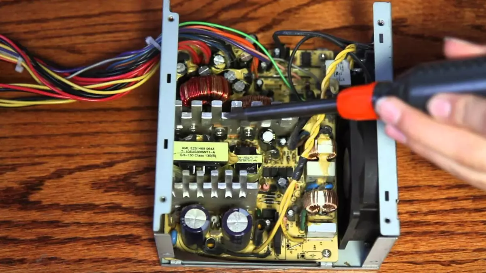
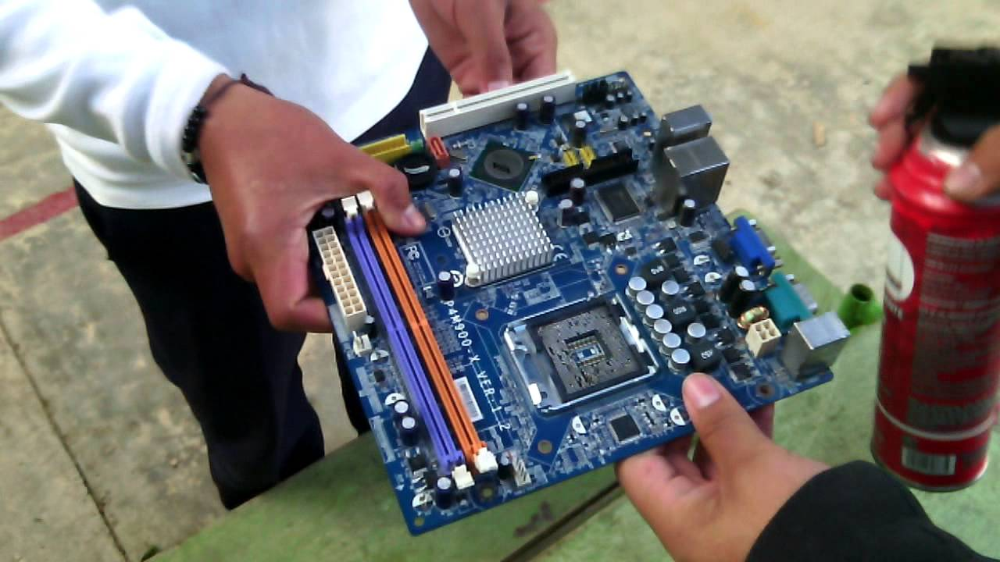
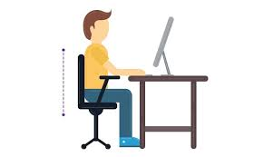
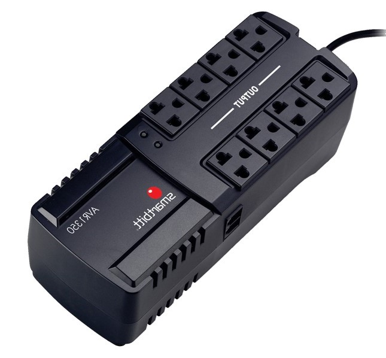

Manual del buen uso del computador
Introducción
Los avances tecnológicos han llevado a la creación de una de las herramientas más importantes en la vida diaria: la computadora.
Se ha convertido en una parte indispensable de nuestras vidas y tiene una amplia gama de aplicaciones tanto
en el ámbito laboral como en el personal. El aprendizaje sobre el uso de las computadoras
y sus aplicaciones contribuye al desarrollo efectivo en la sociedad actual, permitiendo
una mayor adaptación a los cambios tecnológicos y la búsqueda de opciones más eficientes
para realizar nuestras tareas diarias.
Las computadoras tienen la capacidad de procesar información
, transmitirla y almacenarla de manera rápida, segura y precisa. Pueden compartir información entre usuarios,
almacenar grandes cantidades de datos en un espacio reducido y realizar una amplia variedad de tareas útiles.
Una computadora se define como un dispositivo electrónico que acepta entradas, procesa datos, los almacena y produce una salida.
Es capaz de aceptar y manipular datos, producir resultados y almacenarlos para su uso futuro.
Limpieza del equipo
La parte física del PC

En primer lugar se debe encontrar un espacio cómodo para trabajar, amplio y bien
iluminado. En segunda instancia se debe contar con todos los elementos y herramientas
necesarias para llevar a cabo un trabajo en profundidad y dejar el equipo como si fuese
recién comprado.
Entre las herramientas necesarias para esta labor encontramos: un destornillador de estrias
, un destornillador de pala o paleta, pinceles de pelo suave, una brocha mediana o plumero, una
franela o trapo limpio (asegurarse que no suelte pelusas), una pulsera antiestática, también
podemos apoyarnos de una botella de aire comprimido, un soplador o un secador de
cabello de aire frio, pasta
térmica, unos copitos o hisopos de algodón y un poco de alcohol
isopropílico.
2) Interna
La limpieza a realizar se debe hacer desde adentro hacia afuera, y empieza extrayendo las tapas laterales de la torre, lo que permitirá tener acceso a todos los componentes internos de la máquina.
3) Coolers
Su buen estado es de lo más importante para el correcto funcionamiento del PC, ya que aseguran el correcto flujo de aire en su interior, ingreso y egreso. En este sentido, son los encargados de controlar la temperatura interna del PC, requiriendo una atención adecuada.
4) Dispositivo de almacenamiento

Cuando hablamos de unidades de almacenamiento nos referimos a las unidades de CDROM, DVD y/o quemadores, unidades de Diskette o Floppy, Discos Duros y lectores de tarjetas que puedan estar instalados en el PC.
5) Módulos de memoria RAM

Los módulos de memoria RAM, son un componentes delicados de nuestro equipo, tratar con sumo cuidado en su manipulación. Es importante mantener puesta la pulsera antiestática durante todo el proceso. Recuerde que de no tenerla, debe aterrizarse o descargarse de energía estática de acuerdo al procedimiento mencionado al comienzo del apartado “limpieza interna”.
6) Tarjetas de Expansión y Aceleradoras Gráficos
En cuanto a las tarjetas de expansión podemos encontrar diferentes tipos como PCI, PCIExpress
y Tarjetas Aceleradoras de video que pueden ser de tipo AGP o PCI-Express1.
Cada tipo hace referencia a un modelo o estándar de conexión y transferencia de datos. En
la imagen siguiente pueden los slots o ranuras de expansión PCI, los cuales son más claros,
y los slots PCI Express de tonalidad oscura.
7) Fuente de poder
La fuente de poder, como la mostrada en la imagen 10, es uno de los componentes más
importantes del PC, pues es el que suministra energía a todos los componentes del
computador.
La fuente de poder no debe pasarse por alto en el momento de la limpieza,
dado que la acumulación de polvo o suciedad en ella puede provocar fallas en su
funcionamiento, recalentamiento o cortocircuito.
8) Placa Base o Mother Board
La placa madre o Mother Board es el componente fundamental del PC, es
donde se conectan y/o ensamblan todas las partes que le proveen funcionalidad a la
máquina. Sin ésta todos los componentes descritos hasta el momento serían sólo piezas
electrónicas sueltas sin funcionalidad alguna.
Para su limpieza no es necesario desmontarla de la caja o torre, lo que nos ayuda a evitar
cualquier tipo de accidente. En primera instancia se recuerda que en todo el proceso de
limpieza interna es necesario estar aterrizado con la pulsera antiestática, de no tenerla se
recomienda descargarse o aterrizarse nuevamente como se explico iniciando en el apartado
“limpieza interna”.
9) Externa

Esta abarca la limpieza del teclado, el ratón o mouse y el monitor. Se recomienda no desarmar o destapar ninguno de los componentes mencionados anteriormente, ya que muchos de ellos están diseñados para nunca ser desarmados o destapados, a menos que sea por cuestiones de reparación.
Manual del buen uso del computador
1) Una postura correcta
Manteniendo una espalda endereza y el cuello sin adelandtar esto evitara problemas a futuro
2) Mantener una buena visión con la pantalla
 Mantener frente su visión por debajo a la altura de la pantalla evitara forzar la vista.
Mantener frente su visión por debajo a la altura de la pantalla evitara forzar la vista.
3) Proteger las computadoras de fallas electricas
En una computadora, el voltaje se distribuye a través de diferentes componentes para su correcto funcionamiento. El estándar ATX12VO promovido por Intel propone que la fuente de alimentación funcione a 12V, y son los propios componentes, como la placa base, los encargados de realizar la conversión de voltaje a los valores que necesitan. Cuando el voltaje de una PC no es estable, es posible que los componentes no funcionen correctamente debido a los cambios bruscos y constantes de electricidad, se recomienda comprar un regulador de voltaje los mismo para otros dispositivos electricos como nevera o televisores.
4) El mal hábito de comer frente a la computadora
No es bueno comer frente a la computadora por varias razones:
Distrae la atención: Comer mientras se está frente a la computadora puede distraer nuestra atención de la comida y hacer que comamos de manera automática o sin prestar atención a lo que estamos consumiendo. Esto puede llevar a una alimentación desequilibrada o excesiva.
Trato fuerte: tratar de forma brusca a una computadora hara que su rendimiento y funcionalidad lo cuál terminaría en un equipo descompuesto.
Higiene y limpieza: Comer cerca de la computadora puede provocar derrames de alimentos o residuos que pueden dañar el teclado, el ratón u otros componentes de la computadora. Además, puede ser difícil limpiar adecuadamente la zona de trabajo si se mezcla con alimentos y por higiene no se debe hacer contacto con el teclado o mouse.
5) Recomendacion de un mantenimiento constante
Es necesario siempre tener bien cuidada nuestra pc no es simplemente limpiar con un trapo a sus alrededores o apagar correctamente, sino que Hay que ser constante en saber mantener todo
Daniel Madero, Edgmairis Apostol y Jesús Peréz